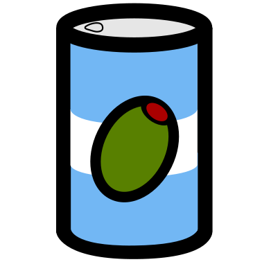

OliveTin
Give safe and simple access to predefined shell commands from a web interface.
See it in action more with some OliveTin demo videos on YouTube.
Use case: Safely give access to commands, for less technical people;
- eg: Give your family a button to podman restart plex
- eg: Give junior admins a simple web form with dropdowns, to start your custom script. backupScript.sh --folder {{ customerName }}
- eg: Enable SSH access to the server for the next 20 mins firewall-cmd --add-service ssh --timeout 20m
Use case: Simplify complex commands, make them accessible and repeatable;
- eg: Expose complex commands on touchscreen tablets stuck on walls around your house. wake-on-lan aa:bb:cc:11:22:33
- eg: Run long running on your servers from your cell phone. dnf update -y
- eg: Define complex commands with lots of preset arguments, and turn a few arguments into dropdown select boxes. docker rm {{ container }} && docker create {{ container }} && docker start {{ container }}
Features
- Super simple config in YAML - because YAML is the future :-)
logLevel: "DEBUG"
- title: Ping host
shell: ping {{ host }} -c {{ count }}
icon: ping
arguments:
- name: host
title: host
type: ascii_identifier
default: example.com
- name: count
title: Count
type: int
default: 1
# Restart http on host "webserver1"
# Docs: https://docs.olivetin.app/action-ssh.html
- title: restart httpd
icon: restart
shell: ssh root@webserver1 'service httpd restart'
Download
Downloads can be found on the Which download do I need? documentation page.
Open Source
This project is open source, and feature requests, bugs, security issues and similar can all be raised via the OliveTin new issue page in the OliveTin GitHub repository.
Contributions to documentation, code, and other parts of the project are most welcome. You can find the contribution guidelines in the repository.